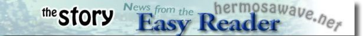

|  | ||||||
Real Estate News
by Mark McDermott
Two-on-a-lot condominiums are the single most pervasive residential building trend in the South Bay. Yet hardly anybody likes them.
They usually replace smaller single family homes and are rarely designed with anything in mind other than squeezing as many square feet on the lot as possible. Often, the buildings have a vaguely Mediterranean theme, but few are really trying to fool anybody: they aren’t trying to be beautiful and aren’t generally built with much concern over how they fit with the rest of the neighborhood.
And so when developers Dean Thomas and Charlie D’Agostino bought the lot behind the car wash on 6th Street in Hermosa Beach, it was easy enough to imagine two more non-descript condos rising from the muck. Developers call such locations – this one was a few hundred feet from Pacific Coast Highway, bordered by commercial development – “fringe” sites, and the projects that go in such places are known as “infill development.” These aren’t the prime lots where good architecture is usually found.
But D’Agostino and Thomas had a different idea. The developers, partners in Corel Development, wanted to build something special. Even though it was a “spec” project – meaning they had no buyer – the developers took a gamble of sorts and hired architect Patrick Killen, probably the most vehemently non-traditional, modern architect practicing in the South Bay.
As D’Agostino recalled, they had a different kind of buyer in mind. They wanted to build homes that had a contemporary, modern feel.
“This is the kind of place a more urban, city person would be comfortable,” he said. “Like a New York person….We didn’t want to do something conservative here. It’s more of a city feel. There didn’t need to be another Mediterranean mess right here. It wouldn’t have fit the neighborhood.”
The project, which was completed a few months ago and is now on the market, is unlike anything else in the South Bay’s PCH corridor. The two condominiums are 2,700 sq. ft. mirror images of one another, and they are designed with the language and materials of modern architecture, such as concrete, glass, and steel. As Killen noted, the promise of modern architecture from the outset – though often lost in the high-end niche it has become – was to use the best, most technologically advanced material available to provide better and more affordable housing.
“Basically, this building is an example,” Killen said. “I think it is a building that says, ‘You know, we don’t have a $300 or $400 per sq. ft. budget to build this thing.’ It’s a spec project, and these guys are not in business to be philanthropic, to design something to just give to the community. Yet it is honest enough that by using clever materials and shapes – even that bow shape to the building that has that sort of curvilinear appeal to it – it can be an attractive addition to the neighborhood. There is glass that is looking out at the ocean and urban images that you see here, not something that you would see in the middle of Tuscany.”
And when it comes to Tuscany and the so-called Mediterranean flair that is so prevalent in the South Bay, don’t even get Killen started. One of the fundamental tenets of modern architecture is the honesty of its approach – basically, what you see is what you get, not structures that have been dressed to look like something they aren’t. Killen is one of the most outspoken critics of what he calls the fundamental dishonesty of most houses built in the area.
“Typically, developers are just taking a style that is popular at the time and basically brokering that, trying to develop it so that people will look at it and imagine they are in Tuscany or wherever the hell they are, anywhere other than here,” Killen says. “Which amazes me. It’s like, what is wrong with sort of living here and having the building have the flair of LA living? What is better than being in LA, at the beach? It’s great weather, a great environment, and certainly I think we should celebrate that as opposed to trying to be somewhere else in the world.”
The condominiums on 6th Street most clearly celebrate their environment in the way they rise above PCH and provide ample light and ocean views. The third floors demonstrate what a modern home can do that a more traditional home cannot. These are expansive spaces, with open floor plans and glass walls, doors, and mitered corner windows that provide ocean views and an elegant perch that somehow makes the highway bustle below seem vibrant rather than harsh. The homes also have decks on both the second and third floor as well as a small roof deck equipped for a Jacuzzi.
The way the two buildings interact is sculptural in its symmetry. The views are focused on either end of the curve of each building, orienting the views slightly southwest and northwest. When you look out, you see a side of Hermosa you’ve likely never seen before, urban yet pacific.
“They are definitely sisters of one another, one that faces predominantly north and one that predominantly faces south,” Killen said. “We were trying to take into account the fact that, yes, we are close to a highway, and we wanted to kind of focus the views of what you see when you look out these buildings. And by doing that, going northwest and southwest, you get more of a distant view where you are seeing less of the highway than if you were looking due west and more of the hillsides of both Malibu and Palos Verdes.”
There are also many elements at work that mitigate what in some modern designs can come off as coldness. The outer walls are clad in Portuguese limestone, and birch, beech, and cherry woodwork are featured throughout the interiors, particularly on the third floors. The second floors each contain four bedrooms, including master bedrooms with fireplaces and large, well-appointed master bathrooms (also tiled with Portuguese limestone). The bottom floors each have artfully stained concrete floors and corner glass doors that open up to small courtyards, allowing for an indoor/outdoor feeling. The buildings are also networked with state-of-the-art connectivity.
D’Agostino said that construction costs for the homes came in around $225 per sq. ft., a relatively low figure for modern, architecturally designed homes with ocean views. As Killen noted, in this case the low cost happens to also be a function of the homes’ essential honesty. Which, the architect argues, is a rare quality.
[easyreader home] [easyreader coupons] [hermosawave] [picture of the day] [webcam] [hermosawave internet] [internet radio]